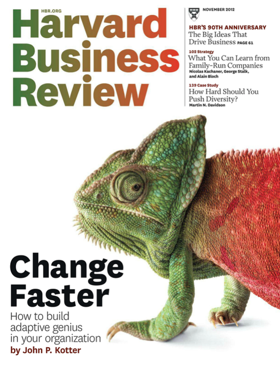

Psicología+Kinesiología · Nivel 5 · Otoño 2016 · UAC-SF · 1er. semestre, jornada vespertina, sábados 11:30AM-14:20PM · Prof. Hans Sigrist
Se han implementado acciones nuevas a seguir, suponga por un momento que son acciones bajo la línea de una ocupación laboral. Se trata de deberes y/o responsabilidades, al respecto, cautele llevar acabo todas las acciones que se solicitan, su consecución demanda tiempo y dedicación, empero también compromiso con los plazos y con sus metas para con la asignatura. Reflexione en torno a su grado de alineamiento: individual y colectivo. Piense en grande.

A continuación, comparto el Calendario de Avances Portafolio, sugiero ceñirse a esta agenda ya que favorece la autogestión y con ello se evita la procrastinación.
| Avance | Producto | Fecha |
|---|---|---|
| 1 | Biodata, guión personal | 11-16 abril |
| 2 | Matriz de fortalezas/debilidades personales | 25-30 abril |
| 3 | Principales subhabilidades, historia motivacional breve | 9-14 mayo |
| 4 | Currículum vítae | 13-18 junio |
| 5 | Reflexión Final | 20-25 junio |
Los siguientes, son los avances que verificaremos en las fechas propuestas (Semana). No debe cargar avances, no se harán retroalimentaciones. Más bien, se orientarán inquietudes en clase en torno a los avances propuestos.
Entre los elementos mínimos que debe incluir su portafolio se encuentran:
- Biodata (resumen profesional, máximo 4 líneas)
- Guión personal (forma de venderse profesionalmente, mínimo 60, máximo 90 palabras)
- Matriz de fortalezas/debilidades personales
- Principales subhabilidades a trabajar (deconstrucción propia de una macro habilidad)
- Una historia motivacional breve (relato motivacional que evidencia el desarrollo de una habilidad laboral, mínimo 80, máximo 150 palabras)
- Currículum vítae (preferentemente mixto, máximo 2 páginas)
- Reflexión final (mínimo 80, máximo 100 palabras)
Sugiero una foto de frente, ofreciendo una sonrisa natural y empática. Existen herramientas (software de escritorio) para editar imágenes como también aplicaciones online, entre ellas destaco Lunapic, que por su simpleza le permitirá rápidamente obtener resultados adecuados. Dos herramientas de Lunapic, fueron utilizadas con la imagen Biodata del Portafolio: Simple Crop Tool, ubicado en el menu Edit con la variante (shape) circle; por otra parte se utilizó desde el menu Filters el primero llamado Black and White. Una vez terminado se presiona Save Image en el menu File y la imagen se guarda en nuestro computador. A modo de ejemplo se puede pasar de esto a esto; o bien de esto a esto.
Una vez finalizado su Portafolio, cautele relevar todos los Criterios parametrizados en la Pauta de evaluación Portafolio Transversal, no olvide adjuntar Carta de presentación (ver pauta, criterio 10). El enlace para cargar su Portafolio se encuentra en el enlace siguiente:
(Principales ejercicios de libre elección, rescatados de las clases, máximo 4 ejercicios desarrollados correctamente). La libre elección de los ejercicios busca evaluar los criterios de selección del estudiante en cuanto al desafío de la actividad y su relación con la deconstrucción de la macro habilidad presentada como tercer avance.
Este producto será evaluado según la rúbrica que podrá encontrar en el enlace siguiente:
Portafolio_CEAL_Kinesiologia_Ibaceta_Catalina.docx
Portafolio_CEAL_Psicologia_Gutierrez_Juan_Pablo.docx
Advertencia. Esta sección será periódicamente puesta al día, disponiendo nuevos recursos e información para la confección de su Portafolio.
La elaboración de su Portafolio es una actividad por principio personal, en él debe relevar las propiedades o requisitos de toda manifestación verbal. Recuerde que las propiedades textuales son:
Al respecto, se comparte con la comunidad, dos extractos con las principales características de las propiedades textuales, cuyo uso es vital en la redacción (expresión escrita), los documento se encuentran en los enlaces siguientes:
Demostrar capacidad para escribir, seleccionar, coleccionar, analizar y reflexionar. Por tanto, es necesario que conozca los temas a incluir y la forma en que será evaluado.
Es un recurso de evaluación que representa su desempeño a lo largo de un proceso formativo. Puede contener diversas producciones personales que evidencian su avance en una determinada área.
Es un recurso útil para enfatizar el rol y compromiso suyo en su proceso de aprendizaje. Puede ser utilizado con fines auto-evaluativos, hetero-evaluativos y co-evaluativos. Debe diseñarse en formato Word (.docx).
¿Sigues usando un currículum para presentarte? ¿Has pensado en usar un Portafolio? En esta asignatura diseñaran un Portafolio, una buena práctica sería entender el mismo como una representación de quién soy, qué hago, cómo lo hago, es decir, como me visibilizo y cómo me visibilizan; en este sentido, el Portafolio puede ser utilizado como una herramienta de consecución laboral.
Como una forma de fomentar su acervo, les propongo la creación de un Glosario, de modo recopilen conceptos e ideas que permitan su uso pertinente en diversos ámbitos de la comunicación. Pueden incorporar los conceptos que desees, como mínimo debieran manejarse los siguientes:
Utilice para estos efectos, el documento Word que puede descargar en el enlace siguiente:
Los términos sugeridos, han sido extraídos del Manual de Comunicación Efectiva en el Ámbito Laboral, socializado más abajo en la sección Recursos:
Escucha activa · Comunicación asertiva · Factor Crítico de Éxito (FCE) · Parafrasear · Retro alimentar · carisma · escéptico · control · persuasión
Una vez finalice su Glosario, puede cargarlo en el enlace siguiente:
A continuación comparto con la comunidad los manuales oficiales de la asignatura, es primordial que los descargue y utilice como guía de estudio. Recuerde que en ningún caso, estos manuales pretenden ser una completa visión del panorama comunicativo en organizaciones, ni menos aún, la última palabra en comunicación efectiva. Como siempre, nuestros manuales Sello, son un acercamiento a las principales tendencias actuales en torno a la temática que cubran. Un aprendiz profundo, reconoce como propio el deber «ir más allá» y ser un «consumidor eficiente de información». Recuerde que, en plena Sociedad del Conocimiento, la información prolifera en todas partes.
En la actual asignatura utilizaremos el denominado Método de la Lectura Previa (MLP), que permitirá a la audiencia llegar a clases mejor equipados con insumos previamente asignados/propuestos. La idea es simple, con ello favorecemos la clase en una experiencia dialógica y podremos de esta forma intercambiar puntos de vista respecto de algún tema de interés.
Este método resulta muy interesante y al mismo tiempo es una excelente oportunidad de crecimiento personal, en tanto promueve la relación de conceptos, para ello es necesario que dada la ocasión de una MLP, puedan establecer relaciones causales o comparaciones, clasificaciones. Aquí la memoria juega un rol importante, existe una crítica respecto a que los métodos de enseñanza relacionados con construir conocimiento «limpian» la memoria, en tanto solo promueven el aprendizaje experiencial y no la memoria. Pues bien, con este método podrán infundir una práctica que apunte a remediar este problema: la memoria almacenará cierto stock de conceptos y datos a partir de los cuales podrán recrear y pensar.
La invitación es a dar una lectura comprensiva, aquí verán que ahora la memoria ya no basta, debemos incorporar a su vez una comprensión léxica para ir avanzando hacia temáticas más avanzadas o complejas.
Lo anterior, lo evidenciarán en la medida que sean capaces de responder a diversas preguntas que estableceré con el único objetivo de ir «subiendo» en lo niveles de comprensión lectora.
En adelante, cuando se utilicemos el MLP, debe velar por dar justo cumplimiento a lo solicitado, no procrastine, no aplaze, tómese un tiempo y ubique la acción en un lugar que no propicie las interrupciones.
Esta agenda recopila información de la ruta que seguiremos durante este semestre, y se poblará a medida que ciertos hitos se cumplan, e.g. Evaluaciones. Existen algunas convenciones, aquí TODO (del inglés to do) corresponde a «tareas» o «acciones» a realizar; DONE (del inglés done) aparecerá cuando la acción ya esté realizada o bien ya esté fuera de plazo; STARTED corresponde a acciones que se inician con anticipación, e.g. «lecturas previas». Se consignan de igual forma, las fechas de cada clase, que cada sábado corresponden dos: la primera desde 11:30AM a 12:50PM y la segunda desde 13:00PM a 14:20PM. La consigna en cada clase, es sólo un descriptor del sub-tema que abordaremos, en ningún caso una especificación de las acciones a realizar en el aula. Utilice esta agenda para organizar su tiempo y poblar su propia agenda también. Visite periódicamente la agenda de modo poder establecer prioridades frente a las distintas acciones que surjan en el semestre. Como siempre, sus inquietudes plantéelas en clase, lugar en el cual todos podremos enterarnos de la o las posibles soluciones.
Presentación de la asignatura Diagnóstico Inicial Nacional
Importancia de la comunicación efectiva y proceso transaccional en la organización Factores de la comunicación efectiva en el ámbito laboral La comunicación en la organización
La comunicación como proceso interpersonal. Emisor y receptor en la comunicación.
Lenguaje verbal, no verbal y paraverbal en la comunicación interpersonal Escucha activa como habilidad lingüística básica en la comunicación
La escucha activa como clave del alto desempeño.
Primera Evaluación Parcial Nacional CEAL (25%). Será responsabilidad de la comunidad, establecer grupos colaborativos de trabajo (4 integrantes), útiles especialmente en la ya conocida Parte Procedimental de nuestras evaluaciones.
La ya cursada asignatura de primer semestre Comunicación Efectiva, debe haber dejado cierta huella diferenciadora en su praxis, debe sin duda, haber generado un cambio en su manera de expresarse y conducirse. Como una forma de recordar aquellos hitos más destacados de aquella oportunidad, se las y los invita a una reflexión de las principales ideas, conceptos, conclusiones, etc.
Iniciemos esta reflexión, recordando algunas de las principales acciones que tuve oportunidad de observar al inicio del primer semestre 2015:
Curso teórico-práctico, cuyo objetivo es entregar al estudiante herramientas para comunicarse efectivamente con jefes, compañeros de trabajo, proveedores y clientes para un mejor entendimiento, a nivel organizacional. Como sabemos, el acto de comunicarse hace que las sociedades existan de manera funcional. En el ámbito laboral, es importante comprender el concepto de comunicación como una forma de entablar relaciones con los colaboradores, quienes son parte integral en el proceso de trabajo. Cuando se comunica de manera efectiva se mejora la productividad de la organización, ya que el buen entendimiento hace que todo resulte más eficaz e inmediato. Se estima que el desarrollo de estas habilidades es fundamental para el buen desempeño profesional, pues durante la jornada laboral se está constantemente recibiendo instrucciones, entregando información, coordinando equipos de trabajo. Todas estas labores y relaciones involucran la comunicación, de ahí la importancia de lograr una buena comunicación en las organizaciones laborales. Partiendo de la base del carácter transversal del curso, se fomenta el desarrollo de una conciencia comunicativa que motive a los estudiantes a reconocer la importancia de la efectividad en la comunicación, cualquiera sea el ámbito profesional, académico o personal de desempeño.
Entregar al estudiante herramientas para comunicarse efectivamente con jefes, compañeros de trabajo, proveedores y clientes, a nivel organizacional.
Estimadas y estimados estudiantes, reciban la bienvenida a este espacio académico y de desarrollo personal. En esta oportunidad, la asignatura Comunicación Efectiva en el Ámbito Laboral, está dirigida a la audiencia de las carreras profesionales Kinesiología y Psicología, ambas ubicadas en su respectivo 5to. semestre lectivo. Como es costumbre al compartir espacios, se hace primordial la práctica de la convivencia, es decir, el saber vivir y convivir con otros y otras. Además, de velar por la puntualidad y la asistencia, es necesario que se plantee un compromiso con la asignatura, con la consecución de sus propias metas, y no sólo con ésta sino con todo acto o proceso que inicie.
En adelante me referiré a las mencionadas carreras que constituyen la audiencia, como «comunidad», con ello favorecemos el sentido de equipo y de convivencia.
Bienvenidos y bienvenidas a todos y todas, reciban mi más cordial saludo y deseos de éxito en este camino que iniciamos todos juntos, Hans.
- Email: hans.sigrist@uac.cl
- Twitter: @hsigrist
- Web: hsigrist.github.io
{kind=link}
{kind=link}
{kind=link}
{kind=link}